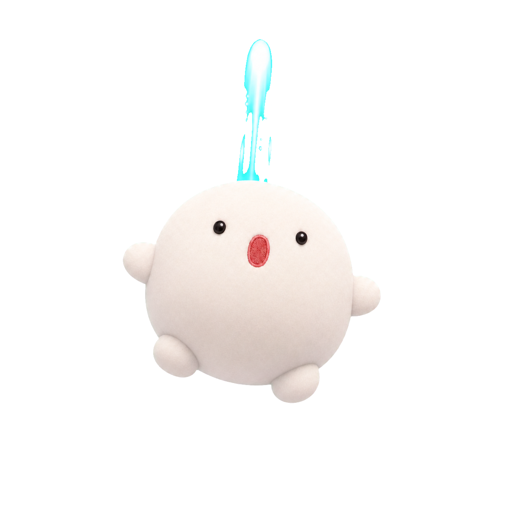
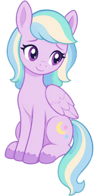

Ⅰ.게임 시작 흐름 공용 프레임
상위 플랫폼 이동 규칙은 0. 게임 플랫폼 이동 구조를 따른다. 이 문서는 게임을 연 순간부터 플레이가 시작될 때까지의 화면 구성과 세부 흐름을 모든 게임이 똑같이 쓰도록 고정하는 규격. 지금 만든 게임 다섯 개가 이 구간을 제각각 만들어 매번 같은 문제를 다시 푸는 상태라, 그 반복을 끊는 것이 목적임.
프레임의 성격
FRM-ROLE공용 프레임은 게임의 재미가 아니라 게임에 들어가는 절차를 다루는 규격임. 플레이 자체의 규칙과 조작은 범위 밖이며 게임별 기획서가 계속 담당함.
1.1.핵심 속성
- 인트로, 시작 화면, 플레이, 잠깐 멈춤, 결과라는 같은 다섯 칸을 모든 게임이 가짐
- 게임에 따라 인트로는 생략 가능하지만 순서는 바뀌지 않음
- 화면을 바꾸는 방법이 게임마다 다르지 않고 하나임
- 지금은 세 갈래로 갈려 있음
- 기기의 되돌아가기 동작이 플레이 도중 게임을 빠져나가지 않고 한 칸 위 화면으로만 감
- 되돌아가기, 환경설정, 소리 버튼의 자리가 모든 게임에서 같음
- 시작, 이어서 하기, 다시 하기 같은 표현을 게임마다 다르게 쓰지 않음
1.2.관점별 가치
기존 다섯 게임 진단
FRM-AUDIT테트리스, 스도쿠, 러시아워, 노노그램, 비행 슈팅 다섯 개의 시작 구간을 실제 화면과 동작 기준으로 대조한 결과임.
| 게임 | 열었을 때 첫 화면 | 화면 바꾸는 방법 | 되돌아가기 | 결과 알림 | 소리 버튼 |
|---|---|---|---|---|---|
| 테트리스 | 모드 고르는 카드 넷 | 주소 뒤 값을 바꿔 페이지를 새로 읽음 | 모드 고르는 화면으로. 의도가 아니라 페이지가 새로 열려 우연히 그렇게 됨 | 가운데 알림창 | 있음 |
| 비행 슈팅 | 난이도·동행 고르는 시작 화면 | 화면 두 장을 숨기고 보임 | 시작 화면으로. 이동 기록을 직접 쌓아 처리 | 알림창·사망 연출 | 있음 |
| 노노그램 | 스테이지 지도 | 화면 셋에 표시 이름을 붙여 바꿈 | 게임을 빠져나가 허브로 | 결과 전용 화면 | 있음 |
| 러시아워 | 시작 화면 없이 바로 플레이 | 덮어쓰는 창 넷을 숨기고 보임 | 게임을 빠져나가 허브로 | 덮어쓰는 창 | 있음 |
| 스도쿠 | 시작 화면 없이 바로 플레이 | 화면 개념 없음 | 게임을 빠져나가 허브로 | 알림창 | 없음 |
2.1.첫 화면부터 다섯 갈래로 갈림
다섯 게임의 첫 화면이 모드 카드, 옵션 시작 화면, 스테이지 지도, 즉시 플레이, 즉시 플레이로 전부 다름. 허브에서 카드를 눌렀을 때 무엇이 나올지 플레이어가 예측할 수 없음. 난이도를 고르는 자리도 게임마다 달라 스도쿠는 난이도를 고르는 화면 자체가 없음.
2.2.화면을 바꾸는 방법이 세 갈래라 같은 사고가 반복됨
세 방법이 섞여 있음. 화면을 숨기고 보이는 방법, 화면에 표시 이름을 붙여 바꾸는 방법, 주소를 바꿔 페이지를 새로 읽는 방법임.
- 비행 슈팅에서 두 화면이 겹쳐 보이는 사고 발생
- 지금도 억지로 눌러 이기게 만든 예외 규칙이 그 게임 안에만 다섯 군데 남아 있음
- 노노그램이 이 방법을 씀. 공용 규칙은 이쪽을 채택
2.3.되돌아가기 규칙이 없어 플레이 중 게임이 닫힘
다섯 게임 중 넷은 화면 왼쪽 위 화살표가 허브로 곧장 나가는 문임. 플레이 도중 눌러도 진행이 사라지며 게임이 닫힘. 비행 슈팅만 사고를 겪은 뒤 한 칸 위로 가도록 고쳤고 그 처리를 그 게임 안에서 혼자 들고 있음. 기기 자체의 되돌아가기 동작도 게임마다 결과가 달라 예측이 안 됨.
2.4.같은 부품을 다섯 번 새로 만들었음
소리 켜기와 끄기, 첫 터치에서 소리를 여는 처리, 화면을 벗어났을 때 멈추고 돌아오면 재개하는 처리, 최고 기록 표시, 결과 알림이 게임마다 따로 있음. 특히 소리를 다루는 부분은 네 게임에 거의 같은 내용이 각각 들어가 있어 한 곳을 고치면 나머지 셋이 낡은 상태로 남음.
다섯 화면
FRM-SCREEN모든 게임이 아래 다섯 칸과 이동선을 그대로 씀. 남색으로 강조된 두 칸은 어떤 게임도 생략할 수 없음.
3.1.인트로 지금은 쓰지 않음 확정 2026-08-01
게임 이름과 캐릭터를 짧게 보여주는 첫 연출. 다섯 게임 모두 두지 않는 것으로 확정됨(2026-08-01 사용자 결정). 지금 다섯 게임 중 이 화면을 가진 것이 하나도 없고, 다섯 모두 곧바로 열려 가릴 준비 시간이 없어 인트로를 새로 만들 이유가 없음. 게임을 열면 시작 화면이 첫 화면임.
자리 자체는 규격에 남겨 둠. 배경 그림이나 소리를 크게 미리 읽어야 하는 무거운 게임이 나중에 생기면 그때 다시 판단하며, 그 경우 아래 세 가지를 지킴.
- 반복 플레이가 잦은 미니 게임에서 매번 보는 로고는 마찰임
3.2.시작 화면 필수 확정 2026-08-01
다섯 게임 모두에 공통으로 두는 것이 확정됨(2026-08-01 사용자 결정). 게임 홈 화면 UI 안에 공용 `<-` 버튼 하나를 두어 게임 허브로 돌아갈 수 있음. 세부 화면에는 허브 복귀 버튼을 두지 않음. 지금 즉시 플레이로 진입하는 스도쿠와 러시아워도 이 화면을 갖게 됨. 담는 것은 배경과 캐릭터, 게임 이름, 최고 기록, 이어서 하기, 시작이며 환경설정은 상단 띠 아이콘으로 둠. 자세한 규격은 5장에 있음.
3.3.플레이 필수
실제로 게임을 하는 화면. 허브 복귀 버튼은 두지 않으며, 게임 고유 HUD와 내부 되돌아가기만 둠. 진행 저장은 홈 화면의 `<-`와 화면 이탈 시점에 처리함.
3.4.잠깐 멈춤
플레이를 덮는 얇은 화면. 계속하기, 다시 시작, 시작 화면으로 나가기 셋만 둠. 게임 화면을 벗어났다가 돌아오는 경우에도 자동으로 이 상태가 되어, 돌아왔을 때 이미 죽어 있는 일을 막음.
3.5.결과
한 판이 끝났음을 알리고 다음 행동을 고르게 하는 화면. 지금 세 방식으로 갈려 있는 것을 플레이를 덮는 카드 하나로 통일함. 담는 것은 이번 점수, 최고 기록과의 비교, 다시 하기, 그만하기임. 새 기록이면 그 사실을 눈에 띄게 알림.
이동 규칙
FRM-NAV4.1.한 순간에 한 화면
다섯 화면 중 지금 보이는 것은 항상 하나임. 화면을 숨기고 보이는 방식이 아니라 지금 어느 화면인지를 한 곳에 적어두고 그 값에 따라 하나만 보이게 함. 두 화면이 겹쳐 보이는 사고와 억지로 눌러 이기게 만든 예외 규칙이 이 방식에서는 생기지 않음. 잠깐 멈춤과 결과는 플레이를 덮는 층이라 플레이 위에 겹쳐 보이는 것이 정상임.
4.2.되돌아가기 계단
화면이 한 칸 깊어질 때마다 되돌아갈 자리를 하나 쌓고, 되돌아가기를 누르면 한 칸만 올라감.
화면 왼쪽 위 화살표와 기기 자체의 되돌아가기 동작이 같은 결과를 내야 함. 지금은 화살표는 허브로, 기기 동작은 게임마다 다른 곳으로 가서 어긋나 있음. 결과 화면에서 되돌아가는 것은 그만하기와 같은 뜻이라 시작 화면으로 가도 됨.
4.3.허브 복귀는 홈 화면의 <- 하나
공용 `<-` 버튼은 게임 홈 화면 UI 안에만 둠. 누르면 게임 허브로 돌아가며, 진행이 사라질 수 있는 게임은 저장 또는 확인을 거침. 선택·플레이·멈춤·결과 화면에는 허브 버튼을 만들지 않음.
시작 화면 규격
FRM-TITLE아래 규격은 대안 네 안을 실제 화면으로 그려 비교한 뒤 사용자가 A안(배경 전면과 하단 조작단)으로 확정한 것임(2026-07-31). 고르던 단계의 네 안 비교 목업은 Ⅱ권 시작 화면 규격 대안 네 안에 있고, 이 절은 그 결론만 규칙으로 적음. 이 규격을 다섯 게임에 실제로 적용한 화면은 6장에 있음.
5.1.배경 전면과 하단 조작단
이 구성으로 정한 이유는 셋임. 게임 이름이 상단 띠와 큰 글자에 두 번 나오던 중복이 사라짐. 캐릭터가 작은 칸에 갇히지 않아 게임의 첫인상이 살아남. 그리고 갈래가 여러 개인 게임에서도 조작단만 바뀌므로 배경·캐릭터·제목이 밀려 사라지지 않음.
5.2.공용 나가기 버튼
공용 프레임은 화면을 가르는 상단 띠를 두지 않음. 게임 홈 화면 UI 안에 <- 하나만 두고, 소리·환경설정·잠깐 멈춤처럼 게임 조작에 가까운 기능은 게임 HUD가 자기 레이아웃에 맞춰 둠.
- 플레이 공간을 보드나 캔버스에 온전히 쓰게 하며, 공용 프레임은 이동 규칙과 저장·소리 그릇만 맡음
5.3.화면 문구 고정
같은 뜻을 게임마다 다르게 쓰지 않도록 표현을 고정함.
| 상황 | 고정 문구 | 쓰지 않는 표현 |
|---|---|---|
| 새 판 시작 | 시작 | 게임 시작, 플레이, 새 게임 |
| 저장된 진행 계속 | 이어서 하기 | 계속하기, 이어하기, 재개 |
| 멈춘 판 계속 | 계속하기 | 재개, 돌아가기 |
| 끝난 판 다시 | 다시 하기 | 재시작, 한 판 더, 다시 |
| 시작 화면으로 | 그만하기 | 나가기, 종료, 홈으로 |
| 설정 묶음 | 환경설정 | 설정, 옵션 |
5.4.칸이 게임에 따라 달라지는 경우
칸의 순서는 고정이지만 게임에 따라 칸의 생김새가 달라짐. 아래 다섯 가지는 예외가 아니라 규격의 일부이며, 다섯 게임에 실제로 적용한 모습은 아래 6장에 있음(안을 고르던 단계의 비교 목업은 Ⅱ권 3장).
- 모드나 난이도마다 최고 기록이 따로 남는 게임이 해당. 칸에는 지금 고른 것과 그 기록만 보임
- 칸을 누르면 목록이 위로 펼쳐지고, 고르면 다시 접힌 뒤 시작을 누름. 지난번에 고른 것이 이미 칸에 들어 있어 대부분은 시작만 누름
- 갈래가 넷이든 여덟이든 첫 화면 높이가 변하지 않는 것이 이 방식을 쓰는 이유임
- 처음 방문에는 목록을 펼친 상태로 열어 어떤 갈래가 있는지 보여줌
- 기록이 고르는 칸과 목록에 붙으므로 위쪽에 대표 기록을 또 적지 않음
- 한 판이 짧아 저장할 진행이 없는 게임이 해당
- 저장을 지원하는데 지금 저장이 없는 경우와 다름. 그때는 칸을 두고 누를 수 없는 상태로 보임
- 상점, 도감처럼 그 게임에만 있는 화면이 해당. 시작 아래 줄에 나란히 두고 새 칸을 만들지 않음
- 환경설정은 상단 아이콘이라 이 줄에 넣지 않음
- 환경설정 안으로 숨기면 매번 들어가야 하므로 자주 바꾸는 옵션은 밖에 둠
5.5.브라우저 도구모음이 남는 기기 확정 2026-07-31
사파리로 게임을 열면 위 주소창과 아래 도구모음이 화면을 계속 먹음. 홈 화면에 추가해 독립 창으로 실행할 때와 브라우저에서 여는 때 모두 같은 흐름이 성립해야 함. 아이폰 크롬·엣지도 사파리 엔진을 쓰므로 결과가 같음. 시작 화면은 화면을 다 쓰는 경우가 아니라 먹히는 경우를 기준으로 만듦.
- 맨 아래 버튼과 화면 끝 사이에 손가락이 헛짚지 않을 여백을 둠. 독립 창에서도 홈 표시 막대 위로 같은 여백을 둠
- 환경설정은 상단 아이콘으로, 갈래는 고르는 칸 하나로 접음. 줄이 더 필요해지면 새 줄을 만들지 않고 기존 칸 안으로 넣음
- 같은 화면이 독립 창에서는 크게, 브라우저 창 안에서는 작게 나옴. 칸 순서는 바꾸지 않고 크기만 바꿈
- 한 화면에 안 들어가면 항목을 접어 해결하고 화면을 길게 늘리지 않음
브라우저 창이 먹는 높이는 아이폰 세로에서 위아래 합쳐 100에서 150픽셀 정도로 추정함(기기·사파리 설정·주소창 위치에 따라 다름). 실기기 실측으로 확정할 항목임. 조건별 실제 화면 비교는 Ⅱ권 7장에 있음.
게임별 시작 화면 시안
FRM-DRAFT규격만으로는 적용이 애매한 지점이 시작 칸임. 게임마다 고를 것의 개수가 달라 어떤 게임은 버튼 하나로 끝나고 어떤 게임은 판이 수백 개임. 그래서 시작 칸을 세 유형으로 나누고 다섯 게임을 배정함. 아래 다섯 장은 설명용 도면이 아니라 5장 확정 규격을 그대로 적용한 실제 화면 모습이며, 색·글자 크기·캐릭터 그림·기록값을 각 게임의 실제 자산에서 가져옴.
6.1.시작 칸 세 유형
| 유형 | 시작 칸의 모습 | 해당 게임 | 고르는 자리 |
|---|---|---|---|
| 바로 시작형 | 시작 버튼 하나 | 비행 슈팅 | 시작 바로 위 옵션 한 줄 |
| 갈래 시작형 | 고르는 칸 하나와 시작 버튼 | 테트리스, 스도쿠 | 칸을 누르면 펼쳐지는 목록 |
| 골라 들어가는 형 | 시작 버튼 하나. 누르면 판 고르는 화면 | 러시아워, 노노그램 | 시작 다음 화면 |
골라 들어가는 형에서 판 고르는 화면은 플레이 앞에 붙는 것이 아니라 시작 화면과 플레이 사이의 한 칸임. 되돌아가기 계단이 한 칸 늘어나며, 판 고르는 화면에서 되돌아가면 시작 화면으로 감.
배경 그림을 가진 게임은 비행 슈팅 하나뿐임. 나머지 넷은 그 게임의 실제 화면 요소로 배경을 대신함(2026-07-31 확정) - 테트리스는 떨어지는 조각과 쌓인 판, 스도쿠는 9칸 판, 노노그램은 완성한 그림 격자, 러시아워는 크림 보드와 출구 길임. 아래 그림에 쓴 판과 문제는 각 게임에 실제로 들어 있는 것임.
6.2.비행 슈팅 바로 시작형

다섯 게임 중 규격에 가장 가까운 화면임. 난이도 네 단계와 동행·자동 두 옵션은 한 판마다 바꾸는 것이라 환경설정 안으로 숨기지 않고 시작 바로 위에 남김(5.4). 나라별 배경 그림 열일곱 장을 이미 갖고 있어 배경은 그대로 씀.
- 세계를 옮겨 다니는 것이 이 게임의 진행이라 점수만으로는 어디까지 갔는지 드러나지 않음
6.3.테트리스 갈래 시작형
모드마다 최고 기록이 따로 남는 게임임. 카드 넷을 펼치면 위 칸이 밀려 사라지므로 고르는 칸 하나로 접고(5.4), 갈래마다 기록이 붙으니 제목 아래에는 대표 기록을 적지 않음. 칸을 눌러 목록을 펼친 모습은 Ⅱ권 3장에 있음. 배경 그림이 없어 게임 자체 요소로 대신함 - 위에서 떨어지는 조각과 아래 열 칸 판에 쌓인 블록 모두 실제 게임의 모양과 색임.
6.4.스도쿠 갈래 시작형
지금은 게임을 열면 곧바로 퍼즐이 떠서 난이도를 고를 자리가 없음. 배경 그림도 캐릭터도 없는 게임이라 9칸 판 자체가 배경이 됨. 규격은 색을 정하지 않고 칸의 순서와 강조만 정하므로, 어두운 게임이든 밝은 게임이든 같은 골격이 그대로 성립함을 이 그림이 보임.
- 보조를 쓰지 않은 판만 셈. 힌트를 쓴 판은 따로 세되 이 자리에는 올리지 않음
- 없으면 비우지 않고 기록 없음으로 적음
6.5.노노그램 골라 들어가는 형
지금은 열면 곧바로 스테이지 지도가 뜸. 지도를 없애지 않고 시작 화면 다음 칸으로 옮김. 판이 344개라 시작 버튼 하나로는 고를 수 없기 때문임. 배경 그림이 없어 완성한 그림 격자로 대신했고, 이 게임의 결과물이 곧 그림이라 배경 대용으로 가장 자연스러움.
- 지도에서 되돌아가면 시작 화면으로, 거기서 한 번 더 되돌아가면 허브로. 지금은 지도에서 곧바로 허브로 나감
6.6.러시아워 골라 들어가는 형

지금은 열면 곧바로 퍼즐이 뜨고 상점과 진행 맵은 위쪽 아이콘으로 들어감. 퍼즐이 수백 개라 시작 다음 칸에서 고름. 배경 그림은 없지만 크림 바닥 판과 오른쪽 출구 길이 이 게임의 얼굴이라 그대로 배경으로 씀. 위 그림의 차 배치는 실제 48번 문제이고 붉은 테두리가 빼내야 할 주인공 차임.
- 그래서 제목 아래 한 줄에 공용 재산인 별과 골드를 먼저 적고 지금 고른 모드의 진행을 뒤에 붙임. 모드를 바꾸면 뒷부분만 바뀜
- 실제 모드는 자체 제작 오리지널 186개와 외부 문제집 Fogleman 400개 둘임. 옛 그림에 적혔던 보드게임·고난도는 게임에 없는 이름이라 바로잡음
6.7.시안에서 확정된 사항
다섯 게임을 실제 화면으로 그려보고 규격에 더한 것임. 5.4에 규칙으로 반영했고 여기서는 왜 그렇게 정했는지를 적음.
- 점수인 게임은 점수, 수집이 진행인 게임은 모은 별과 완성 수, 여행이 진행인 게임은 가장 멀리 간 곳, 푸는 시간이 실력인 게임은 최단 시간
- 비어 있으면 안 되고, 기록이 없으면 기록 없음으로 적음
- 테트리스 스프린트만 시간이라 숫자 앞에 최고인지 최단인지 밝힘
- 노노그램 지도와 러시아워 진행 맵이 해당. 되돌아가기 계단이 네 칸이 됨
- 스도쿠, 러시아워는 시작 화면 자체가 없고 노노그램은 지도가 그 자리를 대신하고 있음
- 테트리스와 비행 슈팅은 있는 화면을 규격에 맞추는 정도임
- 스도쿠 그림이 그 증거임. 흰 바탕 게임에 같은 칸 순서를 그대로 적용해도 골격이 무너지지 않음
- 다섯 중 넷이 이 경우라 예외가 아니라 기본에 가까움. 새로 그리는 그림 없이 이미 있는 요소를 크게 깔면 됨
고정과 자유
FRM-SCOPE규격이 게임의 개성을 죽이지 않도록 경계를 명시함.
| 어기면 안 되는 것 | 게임이 자유롭게 정하는 것 |
|---|---|
| 다섯 화면의 존재와 순서 | 인트로 연출 내용과 유무 |
| 화면 이동 방법과 되돌아가기 계단 | 시작 화면의 그림, 색, 캐릭터 |
| 상단 띠 세 구역과 버튼 자리(환경설정 포함) | 환경설정 안에 담는 항목 |
| 시작 화면 칸 순서와 강조, 누르는 것을 아래로 모으는 것 | 최고 기록을 무엇으로 셀지 |
| 브라우저 창이 있을 때의 아래 여백과 접는 방식 | 배경을 그림으로 할지 게임 요소로 할지 |
| 화면 문구 | 결과 카드에 함께 보여줄 내용 |
| 결과를 덮는 카드로 알리는 방식 | 플레이 화면 구성 전부 |
상태 정의
FRM-STATE각 화면에 머무는 동안의 상태와 다음 화면으로 넘어가는 조건임. 플레이어가 보는 것을 기준으로 적음.
| 상태 | 플레이어가 보는 것 | 넘어가는 조건 |
|---|---|---|
| 인트로 미사용 | 게임 이름이 보이는 중 | 화면을 누르거나 준비가 끝나면 시작 화면으로. 다시 방문이면 이 상태를 건너뜀. 다섯 게임 모두 이 상태를 쓰지 않으므로 첫 상태는 시작 화면임(3.1) |
| 시작 화면 | 배경과 캐릭터, 최고 기록, 아래에 모인 버튼 | 시작을 누르면 플레이로, 이어서 하기를 누르면 저장된 진행으로 플레이, 되돌아가면 허브로 |
| 플레이 | 진행 중인 게임 | 멈춤을 누르거나 화면을 벗어나면 잠깐 멈춤으로, 판이 끝나면 결과로, 되돌아가면 시작 화면으로 |
| 잠깐 멈춤 | 덮인 플레이 화면 | 계속하기로 플레이 복귀, 다시 시작으로 새 판, 그만하기로 시작 화면 |
| 결과 | 점수와 기록 비교 | 다시 하기로 새 판, 그만하기로 시작 화면 |
진행 저장은 플레이에서 잠깐 멈춤으로 갈 때와 판이 끝날 때 이루어짐. 저장이 있으면 다음 방문의 시작 화면에서 이어서 하기가 눌리는 상태가 됨.
적용 순서
FRM-ROLL다섯 게임을 한꺼번에 고치면 위험이 크고, 규격이 실제로 맞는지 검증되지 않은 상태에서 전부에 퍼짐. 아래 세 단계 순서로 가는 것이 확정됨(2026-08-01 사용자 결정).
- 다섯 화면 골격, 상단 띠, 결과 카드, 소리 처리, 진행 저장을 공용 부품으로 한 번 만듦
- 게임은 아직 건드리지 않음
- 노노그램에 먼저 적용. 화면 셋으로 이미 나뉘어 있어 옮기는 폭이 가장 작고 이동 방법도 규격이 채택한 방식과 같음
- 여기서 규격의 빈틈을 찾아 고침
- 비행 슈팅, 테트리스는 시작 화면이 이미 있어 이동 방법 교체 위주
- 러시아워, 스도쿠는 시작 화면을 새로 만들어야 해 작업량이 큼. 스도쿠는 소리 버튼과 난이도 고르는 자리도 함께 생김
새로 만드는 게임은 1단계가 끝난 시점부터 규격을 지키는 것이 필수임.
게임별로 바뀐 것 - 테트리스는 주소에
?mode=를 붙여 페이지를 다시 읽던 모드 선택이 고르는 칸 하나로 접힘. 비행 슈팅은 전용 메뉴의 항목이 규격 자리로 옮겨지고(난이도 세그 + 켜고 끄는 줄) 게임이 직접 들고 있던 이동 기록 관리가 공용 계단으로 통합됨. 러시아워는 시작 화면이 새로 생기고 진행 맵이 그 다음 칸으로, 상점이 조작단 맨 아래 줄로 내려옴. 스도쿠는 시작 화면·소리 버튼·이어서 하기가 새로 생기고, 다섯 중 유일한 흰 바탕이라 같은 규격을 밝은 톤으로 뒤집어 씀.3단계에서 찾은 빈틈 셋 - (16) 켜고 끄는 것(친구 동행·자동 플레이)은 하나를 고르는 갈래(난이도)와 다른 자리다. 시작 바로 위 한 줄에 두고 켜진 것은 강조색 테두리로 보임. (17) HUD를 캔버스 위에 겹쳐 놓은 게임도 플레이 화면에서 규격 띠를 쓰지 않음(띠가 공간을 다시 먹음). (18) 게임이 자기 이동 기록을 직접 쌓고 있으면 먼저 걷어냄(그대로 두면 기기 뒤로가기 한 번에 두 칸이 물러남). 셋 모두 표준 4.8 규칙 16-18로 반영함(v0.4.2).
실측으로 드러난 사고 하나 - 공용 부품이 미리 만들어 둔 빈 화면 자리가 게임 화면과 같은 이름으로 남아 둘 다 표시되어 화면 높이를 반씩 나눠 가졌음(비행 슈팅에서 보드가 절반 크기로 보임). 공용 쪽에서 앞 자리의 이름표를 떼도록 고치고 회귀 검사로 고정함.
2단계에서 찾은 빈틈 다섯(v0.4.1 규칙 11-15) - (11) 보드를 화면 가득 쓰는 게임은 플레이 화면에서 규격 띠를 감추고 모서리 버튼을 공용에 연결. (12) 실패도 시간 제한도 없는 게임은 자동 잠깐 멈춤을 끔. (13) 결과 카드가 글자 아닌 결과물(완성 그림·별점)도 받음. (14) 넓은 화면에서 조작단 폭을 묶음. (15) 강조 버튼 위 글자색은 게임이 정함.
규격에 걸려 있던 결정은 모두 끝남. 확정된 것 다섯 - (1) 시작 화면 구성은 A안(배경 전면과 하단 조작단, 5장, 2026-07-31). (2) 배경 그림이 없는 네 게임은 게임 자체 요소로 배경을 대신함(2026-07-31). (3) 시작 화면은 다섯 게임 모두에 공통으로 둠(2026-08-01). (4) 인트로는 다섯 게임 모두 두지 않음. 자리는 규격에 남기되 무거운 게임이 나올 때 다시 판단함(2026-08-01, 3.1). (5) 적용은 세 단계 순서대로 감(2026-08-01, 완료).
개발 참고
FRM-DEV확정 후 구현에서 지킬 정책만 규칙 문장으로 남김. 아래 정책을 실제로 담은 공용 자산은 shared/frame/이며(2026-08-01 제작 완료), 파일은 열 개임 - 고정 문구(text) · 되돌아가기 계단(stack) · 화면 골격(screens) · 상단 띠(topbar) · 시작 화면(titlescreen) · 잠깐 멈춤과 결과 카드(cards) · 소리(audio) · 진행 저장(save) · 스타일(frame.css) · 조립 진입점(index).